cluck coin - token of friendship.
routed engraving on acrylic w/ cyano fill
drawing by bre stanton

tâches des l'anciennes
watercolor and graphite

cocobolo hs, maple neck, ebody fb
ebony & mop truss rod cover
grover tuners & bone nut
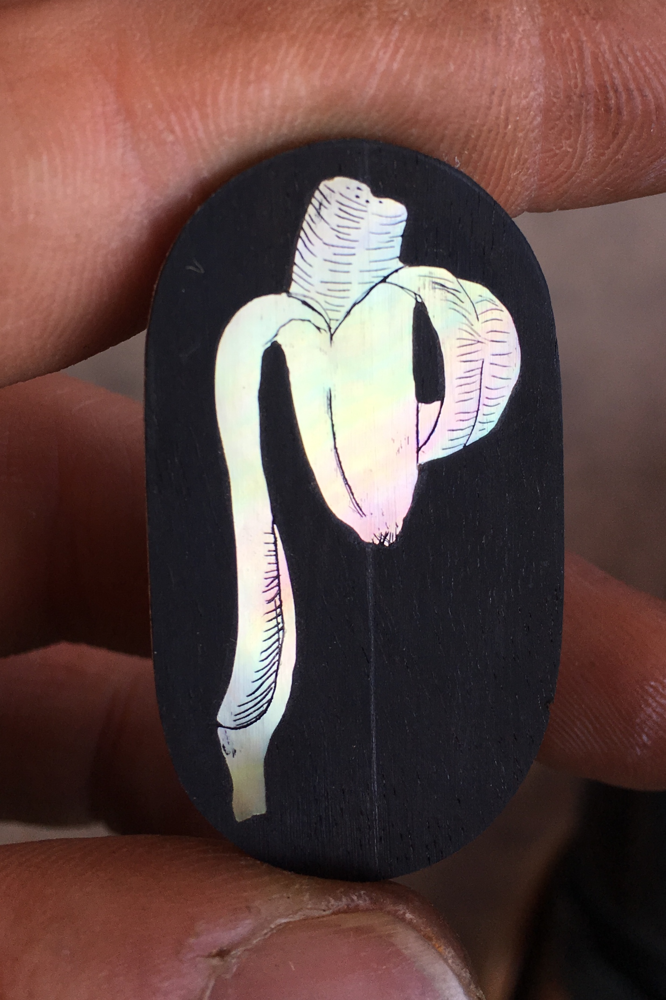
magnetic truss rod cover
mother of pearl in ebony
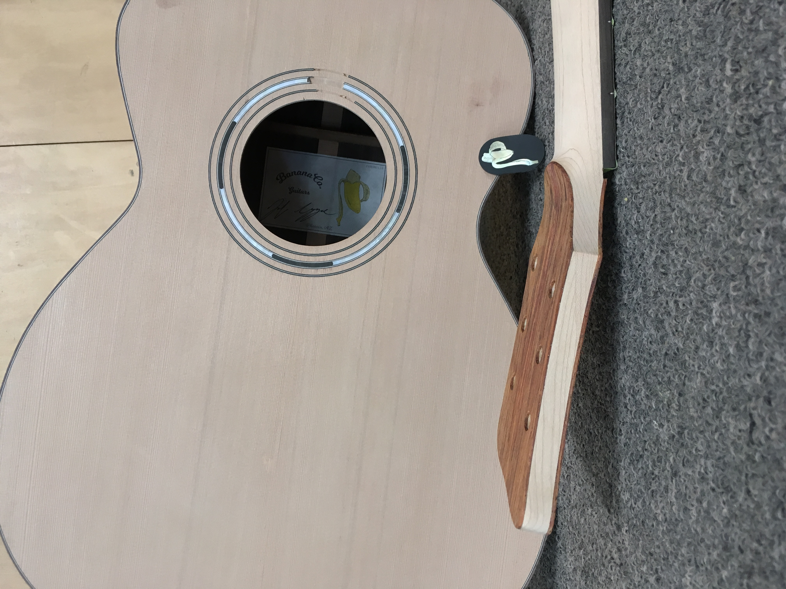
cedar top / e. indian back & sides
maple neck, ebody fb, cocobolo b&s
ebony truss rod cover
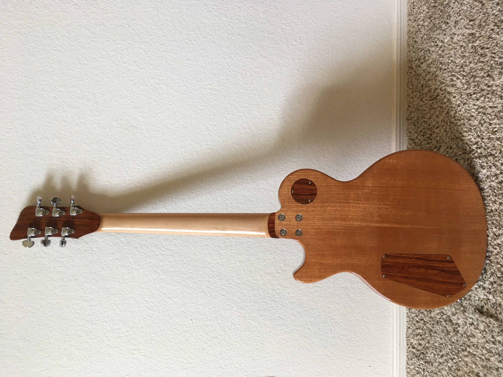
cocobolo top / mahogany body
maple neck / ebony fingerboard
cocobolo headstocks / ebony truss rod cover

studies for tâches des l'anciennes series
watercolor and graphite
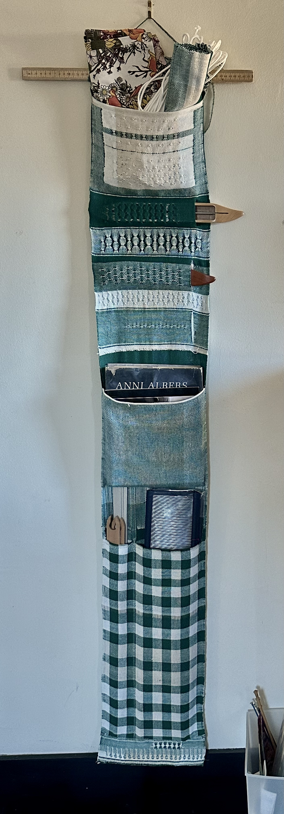
cotton double weave sampler
8-shaft loom

study for a portrait of a friend
graphite
wip
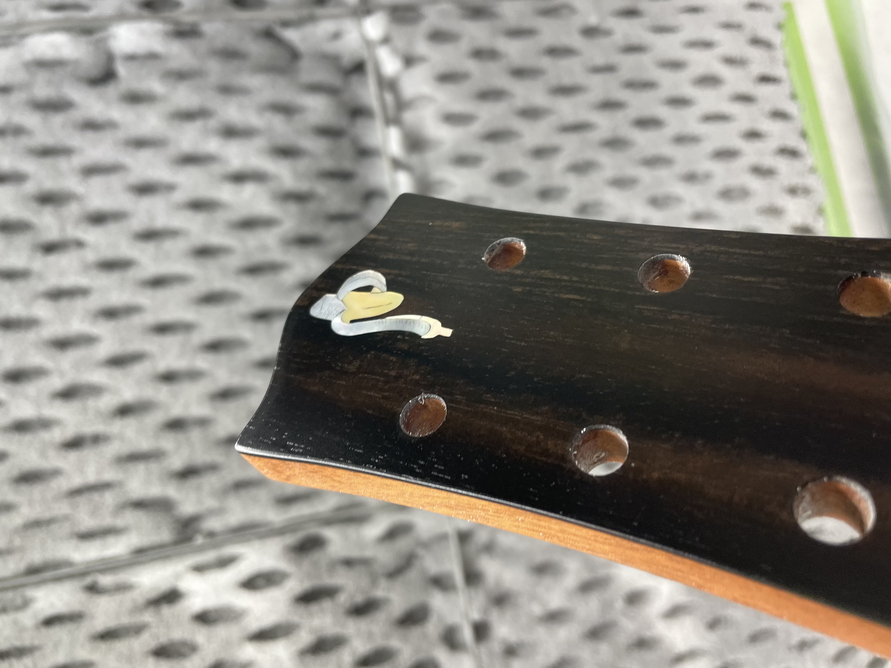
ebondy cap / mahogany neck
mop banana inlay
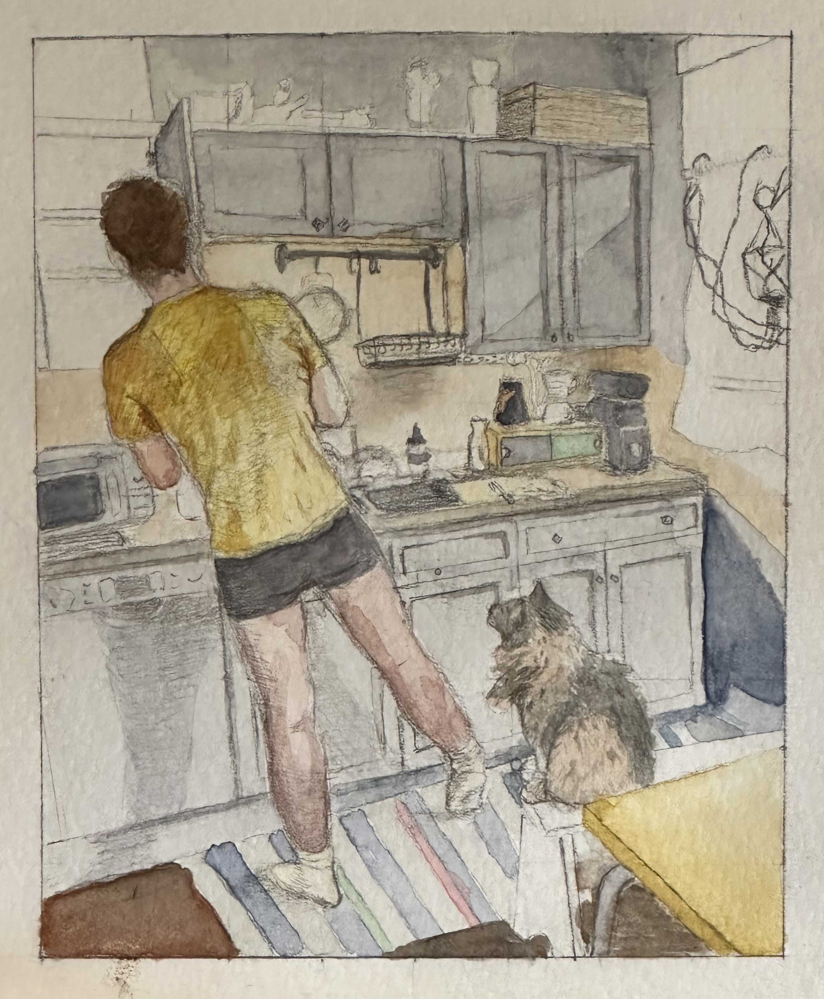
tâches des l'anciennes
watercolor and graphite

a friend offers a donut
watercolor and graphite
wip

self portrait during a hot meal
watercolor and graphite

knitted hat on model
pattern by wooly wormhead

mothers day card
watercolor and graphite
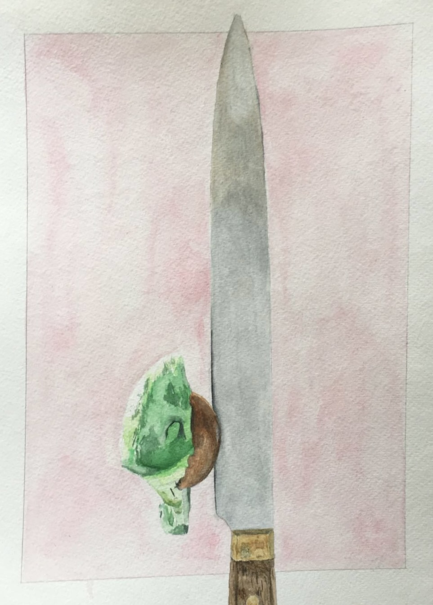
removing the seed
watercolor and graphite
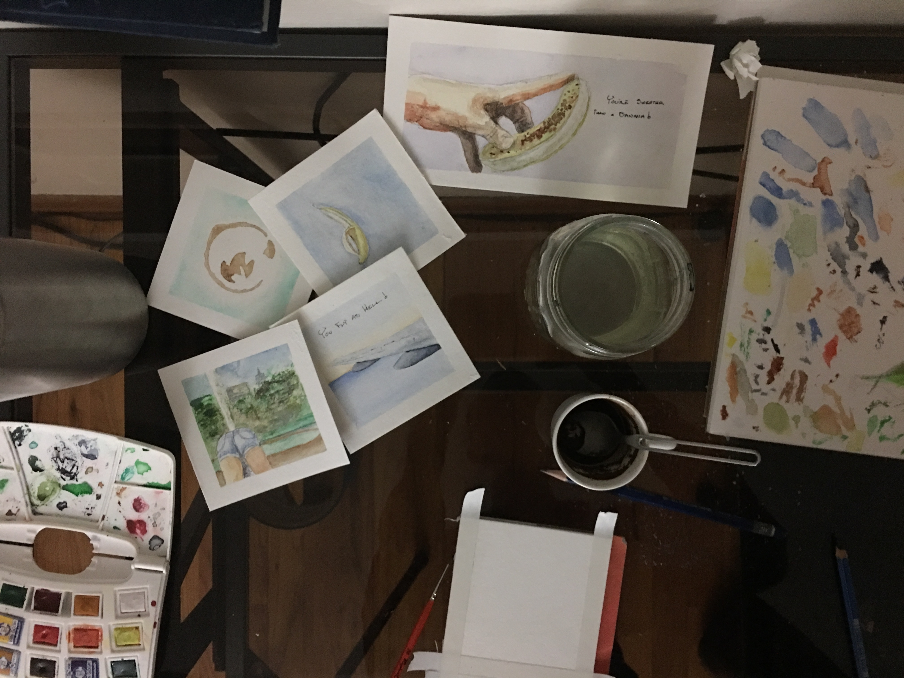
thank you cards
watercolor and graphite
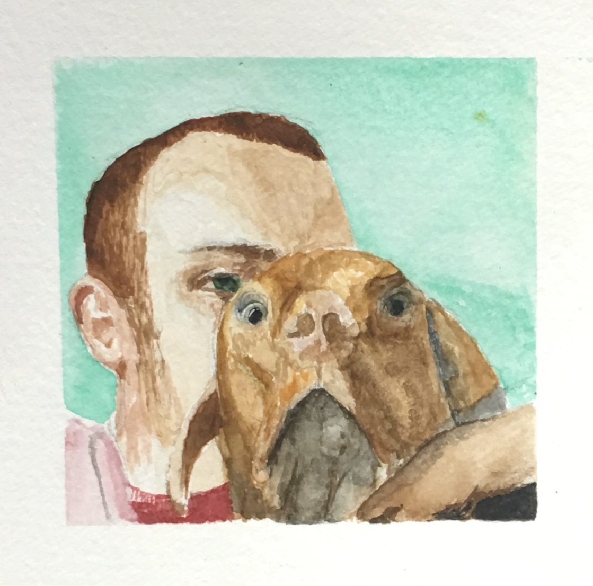
self portrait with winston
watercolor and graphite
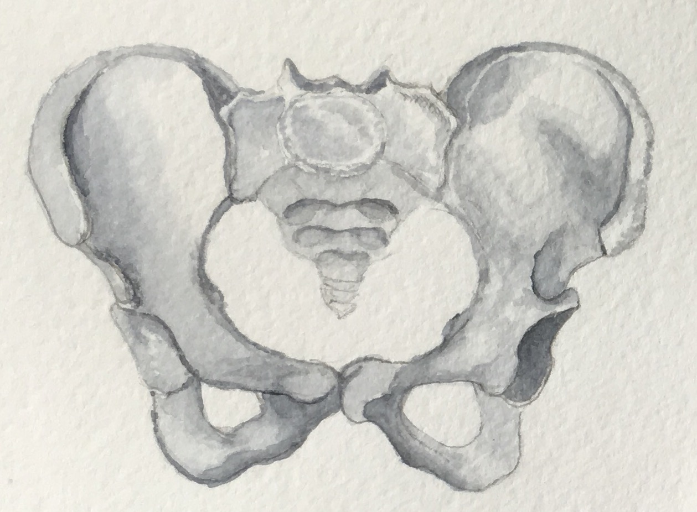
mothers day card
watercolor and graphite
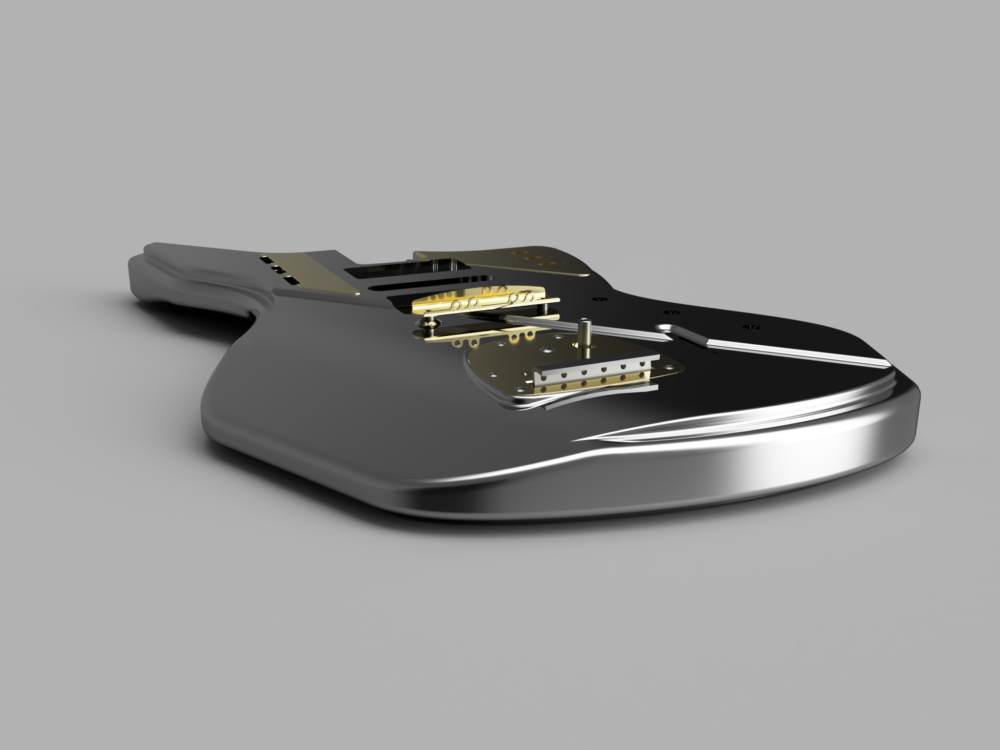
baritone body 3D render
surf style with matery bridge


the old klavon's
CMYK silkscreen
About the Work
a collection of works I made